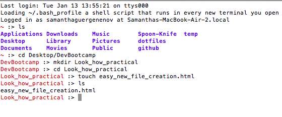
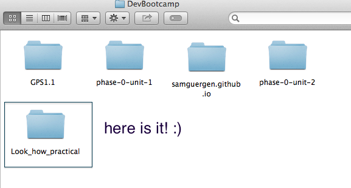
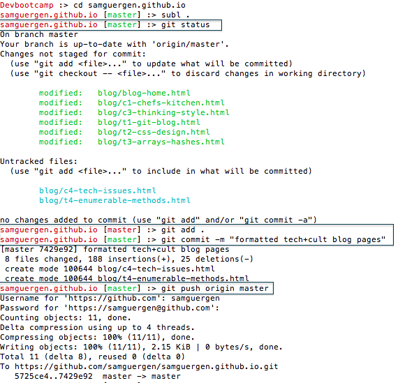

- Blog Posts
- Technical
- VC, Git and Github
- HTML & CSS
- Arrays & Hashes
- Ruby Enumerable Magic
- Intro to Ruby Classes
- FP vs. OOP
- Loops: JS vs. Ruby
- Dynamic vs. Static Typed languages
- Cultural
- DBC warm up
- Abstract Sequential
- Internet & Bias
- Pairing & Feedbacks
- Stereotype Threat
- Values To Live By
- Situations of Conflict
- Cheat Sheets
- SQL
12/20/2014
Let's git started!
This first week, I learned a lot about version control software such as Git and Github, and became acquainted with manipulating my Desktop (operating files, moving across directories, etc) from the command line. Whoa! The command line is not nearly as esoteric as I thought. It just comes down to learning the basic commands like "ls", "pwd", 'cd', "mv", "mkdir", "touch" & more!
Here is a link to all of the useful commands you can use:
It makes things so much easier in many ways, and of course, I can look pretending I'm a pro, doing very simple things (like moving folders) that appear hard to the outside eye.
Sam becoming Neo... loading 10%....
 Aside from the command line, we dug deep into the concepts of version control, git and Github.
Version control allows you to keep track of the edits you make to a project. This can be useful in situations where you realized that you made a few mistakes and want to go back to an older version of your project. In most cases, you can't remember exactly where you made the changes- how practical would it be if you could see the history of all your edits? This would allow you to pinpoint exactly where and when any edits was made, thus you have better control over your project as a whole. This is precisely what "version control" is - it's a software that allows you to have control for tracking the different versions of your project.
It's important to note that instead of tracking and saving every unit of changes in your projet (such as every letter typed- making it quite overwheling to track anything), the user chooses when and how to bundle up - aka commit- her edits, in order to save them altogether. In a way, you can think of version control as a 'saving point management program'.
Finally, version control allows more than one user to easily collaborate with you on the same project. Pulling edits from the original project to the one you are working on (the "cloned" version) allows your edits not to overlap with your coworkers' edit. This can save a considerable amount of time as it avoids constant communication to let the others know which part of the project you are working on.
Git is an example of a version control system. Well, actually, it is the most popular, and widely used version control system. It allows you to track your changes locally (on your own machine), through the command line window. The commands that git uses are very intuitive and easy to remember, such as "git status" to check the status of a project, or "git add ." to add the last edits made to a project. Even if you are unsure about a certain command, you can always type 'help' or 'man' in the command line to receive their complete instructions.
What makes git so wonderful, is that in additioning to track your changes locally, it allows you to interact with online platforms such as Github (which will talk about in just a second), to download, synchronize, push, or pull content between the user's local files and her remote ones. This means that any changes you make to your file, or anytime you create a 'saving point" locally, you only need to send a command through git for your edits to show online! And that's usually how people will collaborate together on a project. Most often, they don't have access to what is going on in your machine (unless information flows completely openly with members of the same network, but most likely, it won't be the case, even in a professional environment) , so you need some type of online version control system to keep everyone at loop.
Git calls the online platform it operates on the 'remote location', and you can expect a lot of back and forth between local and remote- pulling updates files to your local machine, pushing your updates to the remote file that everyone has access to, etc. Note that a "remote location" of a file can be anything from a Github repository, to an email inbox. It's also known as a 'cloud' storage.
After saving your changes into your folder, the general flow of Git is:
#checks status of file
#adds and bundles up your changes to the staging area
#officializes and applies your bundled up changes to your local computer.
#pushes changes to your remote location
Here is how I typically operate Git in the Terminal:
Here is a simple guide for using Git. Your welcome!
Github is an online platform that allows users to code socially using version control. In a way, it is an online equivalent of git, meaning that it provides storage and version control through the internet, instead of your local machine.
It is also useful for storing your code, because it allows you to access it from any machine that has internet. You simply need to log into Github. Github files can also be used locally through git (by downloading, or 'cloning' the files from the terminal using git) but it is important to synchronise all the changes you make.
Finally, Github is a great way to improve your code if you are willing to accept inputs and recommendations from others. This is called open source, and by making your project (Github calls it 'repository') public to others, (or private to a selected few) others can fork their own clone of your project, and improve your code before submitting them back for your approval.